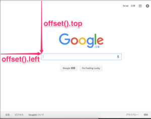

Javascriptのライブラリです。
1.以下を追加してください
<script type="text/javascript" src="https://ajax.googleapis.com/ajax/libs/jquery/1.7/jquery.min.js"></script>ようやくJava Scriptを記載してみます。
さて今回の実装したい動作は "スクロール量によってCSSを変化させる"です。
以下のポイントを押さえましょう。
変化をつけるのはnav
変化する契機をスクロール量でどう表現するか。
上記踏まえ、まず以下でnavを変数定義します。
var nav = $('.nav');次に以下でnavの縦座標を変数定義してます。 offset().topはjQueryから呼び出しており、top値を取得してきます。すなわちここでページトップの座標が取得されます。
var navTop = nav.offset().top;
次に、この動作の関数部分についてです。
scrollは各要素のscrollイベントに関数をbindします。 scrollイベントは、文書がスクロールした際に呼び出されます。 jQueryのイベントは、コールバック関数の最初の引数でjQuery.Eventオブジェクトを受け取ることができます。このオブジェクトを使って、規定のイベント動作のキャンセルや、バブリングの抑制などを行います。
すなわち、画面をスクロールすることで以下の内容が逐次適用されているわけです。
var winTop = $(this).scrollTop();
if (winTop >= navTop) {
nav.addClass('fixed')
} else if (winTop <= navTop) {
nav.removeClass('fixed')
}上記ではwinTopを定義し、winTopと事前定義したnavTopの差分を比較しています。 そして、(winTop >= navTop)の条件に対して以下をうわがいているわけです。
fixed {
position: fixed;
top: 0;
left: 0;
width: 100%;
border-radius: 0;
-webkit-border-radius: 0;
-moz-border-radius: 0;
-o-border-radius: 0;
-webkit-box-shadow: 0px 3px 5px 0px rgba(0,0,0,0.3);
-moz-box-shadow: 0px 3px 5px 0px rgba(0,0,0,0.3);
box-shadow: 0px 3px 5px 0px rgba(0,0,0,0.3);
}fixedが適用されると、「Pposition: fixed」が効いてきます。 また、top0、left0、width100%にすることにより、画面上部に固定されたnav領域が出現するのです。
「border-radius」以下に記述されている内容は各ベンダープレフィクスと呼び、 それぞれのブラウザでのCSS解析を補助している。
| 項目 | 説明 |
|---|---|
| webkit | Chrome iso |
| moz | Mozilla |
| o | Opera |
| ms | IE |
2.編集が完了したら保存してブラウザで表示してみましょう。以下のように表示されていればOKです！